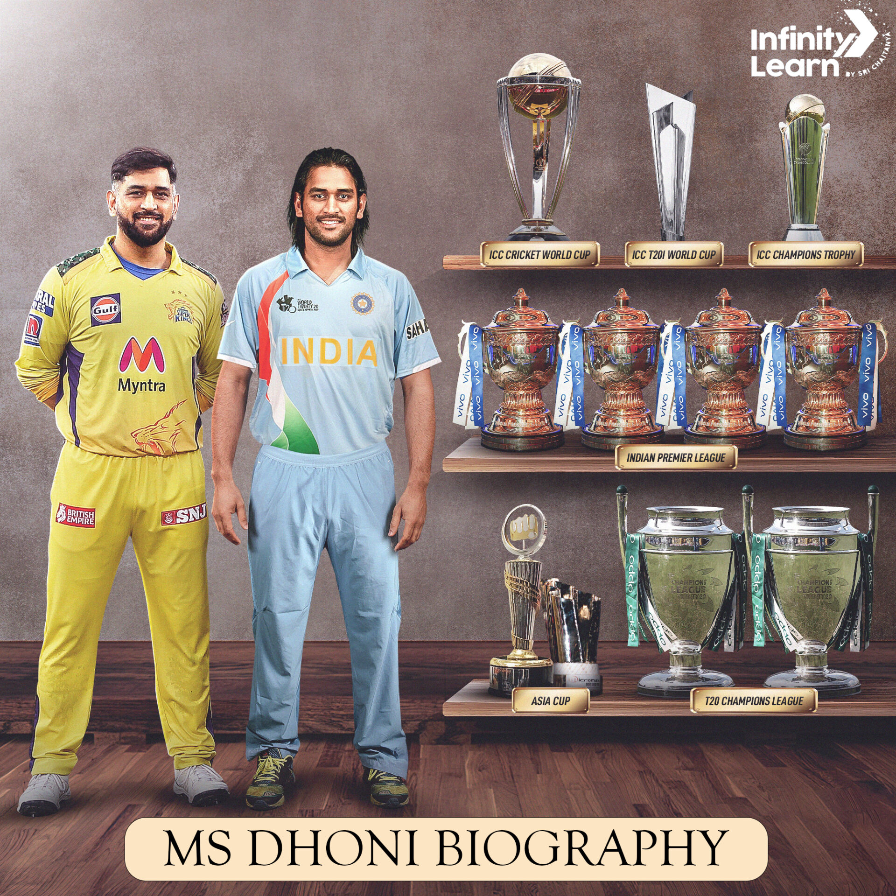
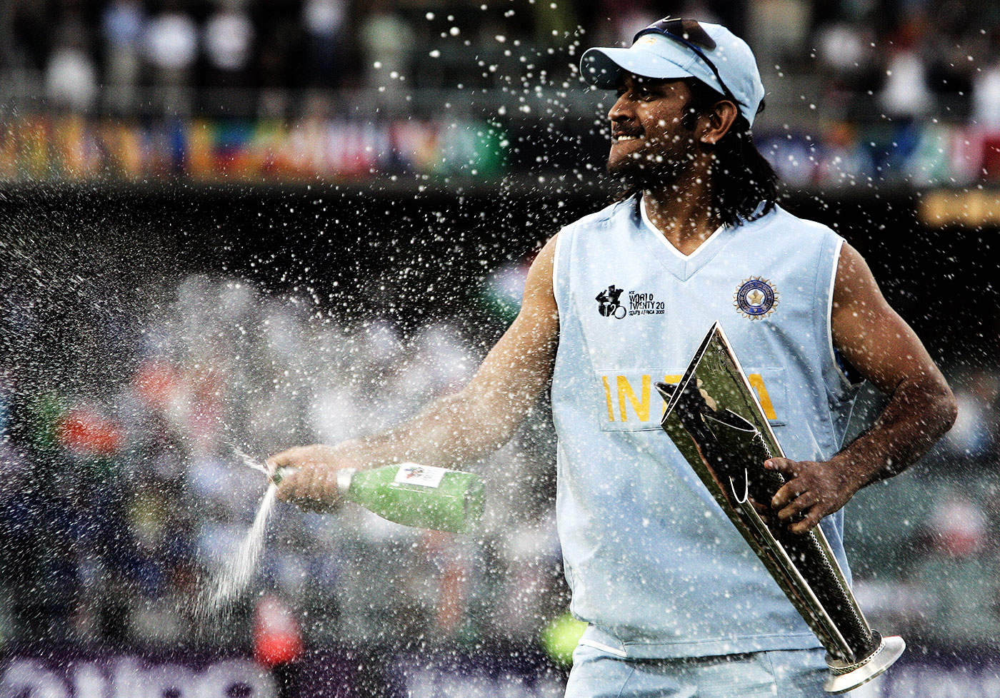
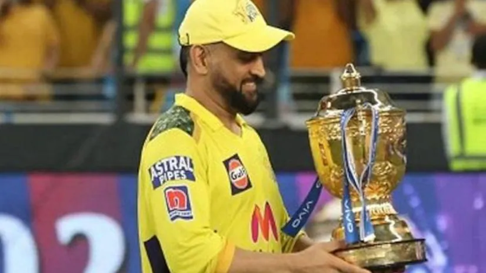

MS Dhoni was born into a humble family of five and his route from humble beginnings to an iconic figure in cricket was not very simple but his determination and dedication paid off and today he is an inspiration for all of us.
Mahendra Singh Dhoni also known as MS Dhoni, is a well-known Indian cricketer. From 2007 to 2016, he captained the Indian National team in limited-over formats, and from 2008 to 2014 he captained the nation in Test cricket. One of the biggest aspects of his career is that he is the only captain to have won every ICC trophy during his tenure such as the 2007 ICC World Twenty20, the Asia Cup in 2010 and 2016, the 2011 ICC Cricket World Cup, and the 2013 ICC Champions Trophy.
Dhoni made a permanent mark in the world of cricket as a right-handed middle-order batsman and wicket-keeper. He is one of the most successful run scorers in One Day Internationals (ODI) who have scored over 10,000 runs. He was even considered as a strong ‘finisher’ in limited-over contests, as well as one of the top wicket-keepers and captains in international limited-overs cricket.
Dhoni made his ODI debut against Bangladesh in 2004 and his first test match against Sri Lanka in next year. His amazing performances received him various honors such as the ICC One-Day International Player of the Year title in 2008 and 2009 that made him the first player to get the award twice.
Dhoni was born in Ranchi, Bihar (now Jharkhand) on July 7, 1981. He is a Rajput Hindu. His parents moved to Ranchi from Uttarakhand.
His father Pan Sing worked at MECON. He also has a sister named Jayanti and a brother named Narendra. His nicknames are Mahi, Captain Cool, MSD, and Thala.
He loves Sachin Tendulkar, Amitabh Bachchan, Lata Mangeshkar, and Adam Gilchrist a lot and also termed them as his ideals. He was very good in badminton and football and has been great in playing during his Ranchi school. He was selected at the district and club levels for this. He was also a goalkeeper for his squad, but his coach transferred him to a nearby cricket club.

On July 4, 2010, Dhoni married his schoolmate Sakshi Rawat. Sakshi was pursuing a degree in hotel management and working as an intern at the Taj Bengal in Kolkata when they married.
On February 6, 2015, they had a baby daughter named Ziva in their family. However, Dhoni was in Australia with the Indian cricket team for the 2015 Cricket World Cup at the time. Even during his daughter’s birth, Dhoni took the personal decision to stay with the team in Australia and said “I am on national duty, other things can wait.” This clearly showed his unshakeable commitment to representing his country in cricket even when his family needed him a lot.
Dhoni made an outstanding impression in his fifth One-Day International (ODI) encounter by scoring 148 runs in just 123 deliveries in Vishakhapatnam. This outstanding effort has created a new record for the highest ODI score by an Indian wicket-keeper.
Dhoni was promoted to the number three batting position in the third ODI at Jaipur. He played brilliantly and scored 183 runs in 145 balls to give India a historic victory. This inning was described as “uninhibited, yet anything but crude” by Wisden Almanack in 2006. DHONI ERA.
The 2007 ICC Cricket World Cup was the ninth Cricket World Cup, a One Day International (ODI) cricket tournament that took place in the West Indies from 13 March to 28 April 2007. There were a total of 51 matches played, three fewer than at the 2003 World Cup (despite a field larger by two teams).
The 16 competing teams were initially divided into four groups, with the two best-performing teams from each group moving on to a "Super 8" format.Every team played total 6 matches in super eight round.Teams didn't played with teams of their own group in super 8 round.They played total 6 teams from another three group(Top 2 teams of all three groups) From this, Australia, New Zealand, Sri Lanka, and South Africa won through to the semi-finals, with Australia defeating Sri Lanka in the final to win their third consecutive World Cup and their fourth overall. Australia's unbeaten record in the tournament increased their total to 29 consecutive World Cup matches without loss, a streak dating back to 23 May 1999, during the group stage of the 1999 World Cup. The tournament also saw upsets and surprise results, with pre-tournament favourites India and Pakistan failing to make it past the group stage, while Bangladesh, the second-lowest ranked ICC Full Member at the time, and World Cup debutant Ireland, which was an ICC Associate Member at the time, made it to the "Super 8", beating India and Pakistan respectively en route. Ireland became only the second associate nation to make it past the first round of a Cricket World Cup, the first being Kenya in 2003.For more information T20 world cup 2007
|  |  |